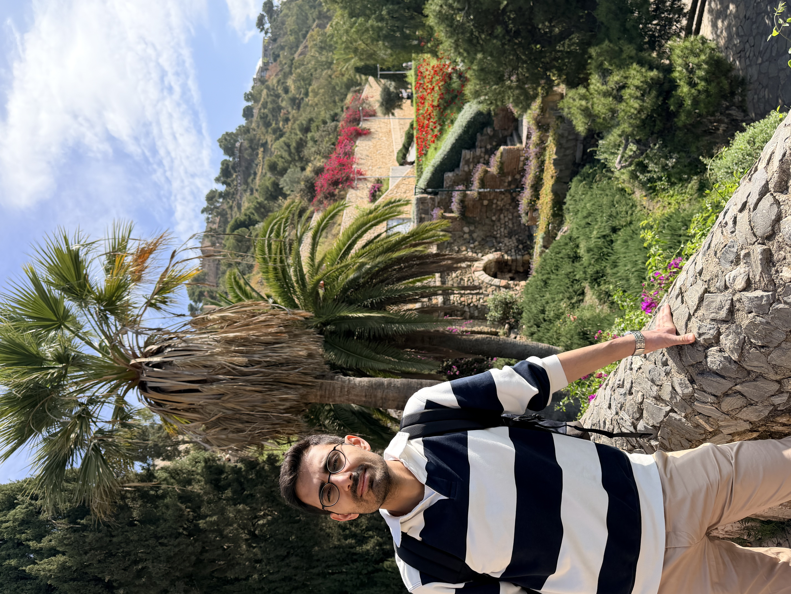
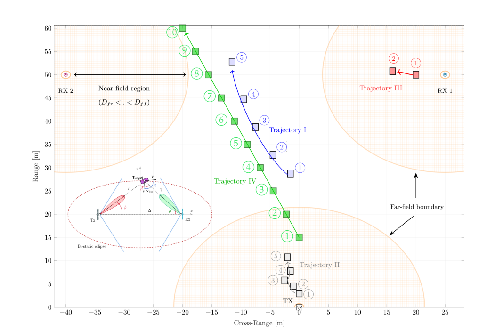
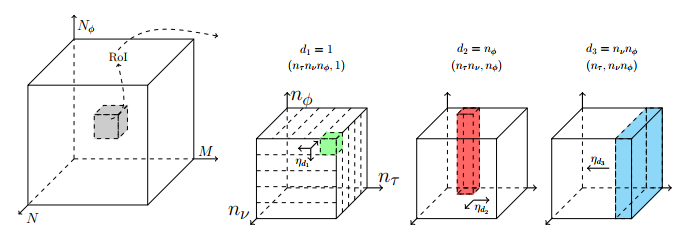

Welcome to my website hosted on GitHub Pages.

I am a Radar System Architect and researcher with a PhD in Electrical Engineering- Telecommunications (summa cum laude) from TU Berlin. My doctoral research focused on Integrated Sensing and Communication (ISAC) for 6G networks, with emphasis on beam-space signal processing, parameter estimation, and novel waveforms.
Currently, I work on the development of next-generation radar solutions for automotive and robotic applications. I have hands-on experience in waveform design, signal processing, target tracking, sensor fusion, and machine learning applications for radar perception.
I enjoy implementing algorithms in Python, C++, and MATLAB, and have worked with deep learning frameworks such as PyTorch and TensorFlow.
• Multistatic parameter estimation in the near/far field for ISAC (IEEE TWC)
• Beam-space MIMO radar for joint communication and sensing with OTFS (IEEE TWC)
• Variational autoencoder-based parameter estimation in beam-space OFDM ISAC (GLOBECOM 2023)
• Patent: System and methods for multiplexing with modulation on zeros
• All Publications →
Multi-static Integrated Sensing and Communications

Hierarchical Soft-Thresholding for Parameter Estimation

Feel free to explore my projects and code.